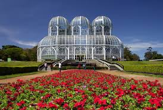
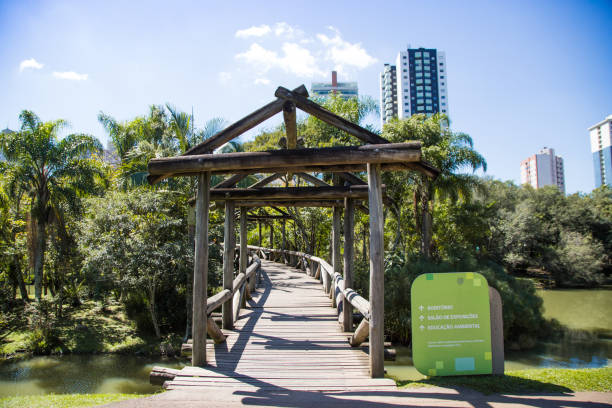
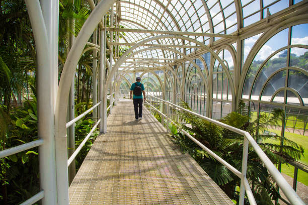
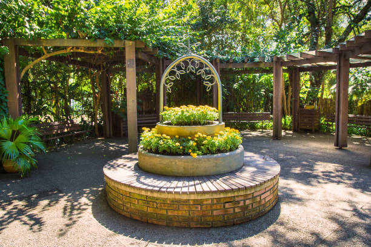

Bem-vindo ao Jardim Botânico de Curitiba
Explore um dos maiores atrativos turísticos do Brasil e conheça a diversidade da flora brasileira em um só lugar!




Explore um dos maiores atrativos turísticos do Brasil e conheça a diversidade da flora brasileira em um só lugar!
O Jardim Botânico de Curitiba é um verdadeiro refúgio natural em meio à cidade. Inaugurado em 1991, ele é conhecido por sua icônica estufa de vidro e por abrigar diversas espécies de plantas da Mata Atlântica.